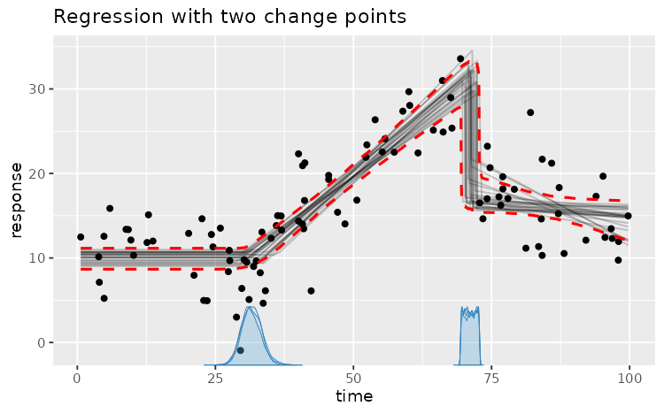
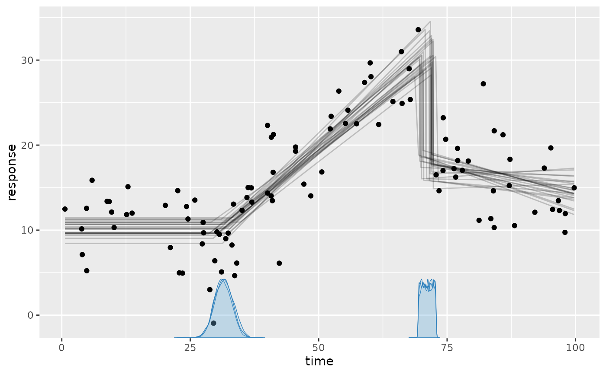
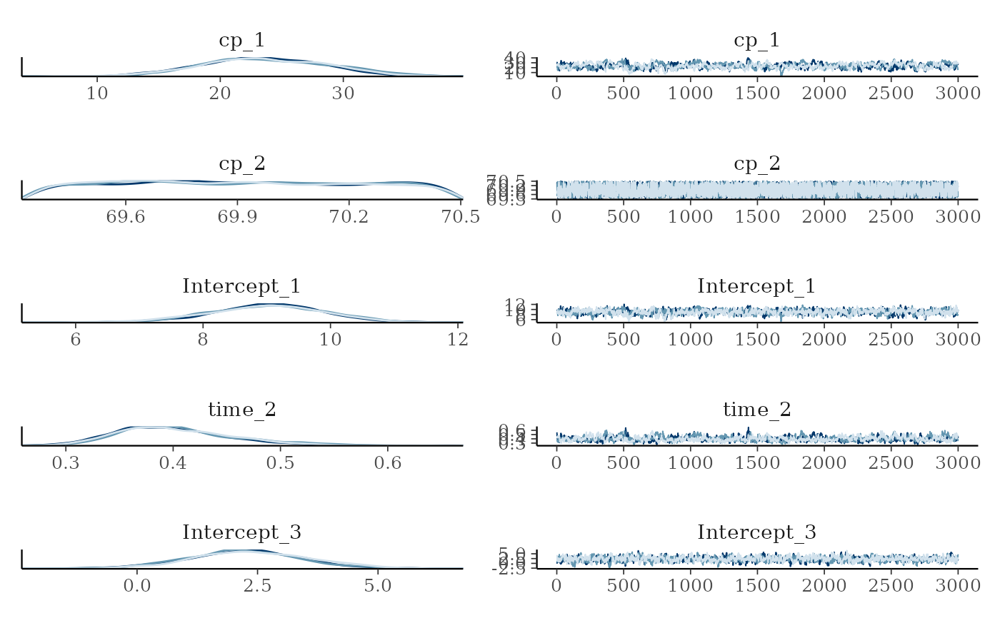
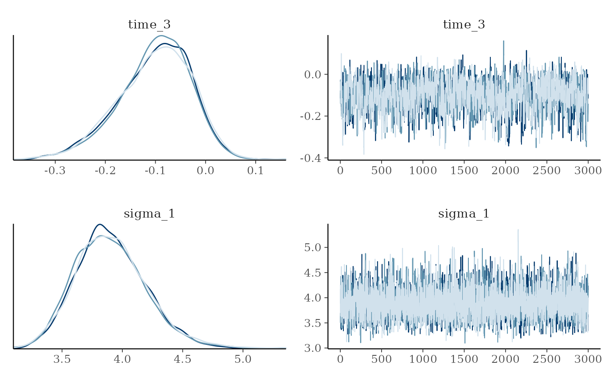
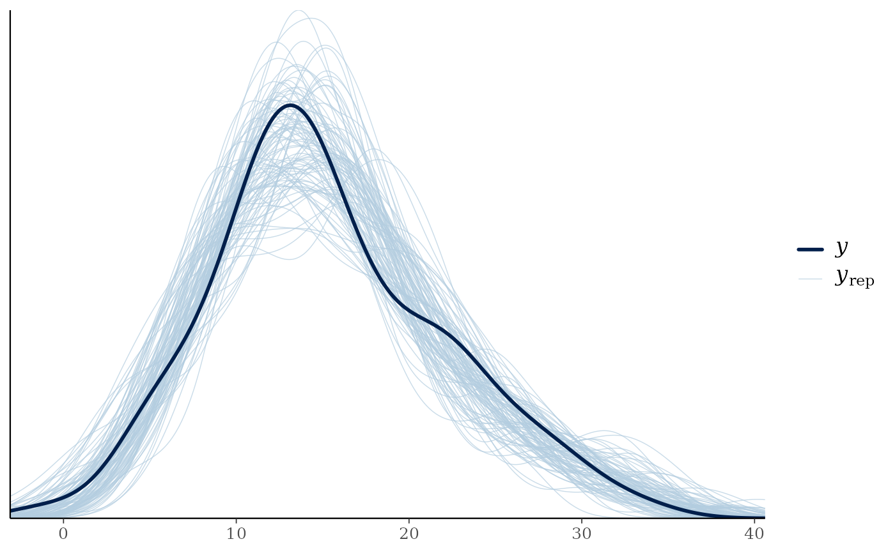
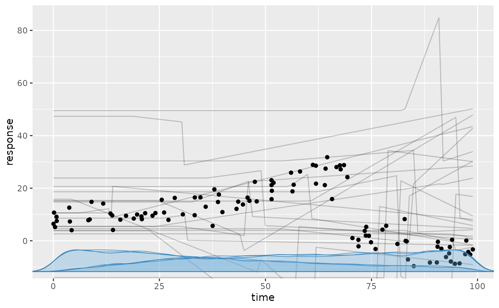

Given a model (a list of segment formulas), mcp infers the posterior
distributions of the parameters of each segment as well as the change points
between segments. See details or the mcp website.
Usage
mcp(
model,
data,
prior = list(),
family = gaussian(),
par_x = NULL,
sample = "post",
cores = NULL,
chains = 3,
iter = 3000,
warmup = 1500,
adapt = lifecycle::deprecated(),
inits = NULL,
jags_code = NULL,
seed = NULL,
diagnostics = list(),
quiet = FALSE
)Arguments
- model
A list of formulas - one for each segment. The many examples on the mcp website. But briefly:
The first formula has the format
response ~ predictorswhile the following formulas have the formatresponse ~ cp ~ predictors. Here,cpnames the change-point part of the formula rather than a literal variable. The response and change-point parts can be omitted (cp ~ predictorassumes the same response;~ predictorassumes an intercept-only change point). Terms normally carry into later segments until redefined (see details).The following terms can be modeled:
Regular formulas: e.g.,
~ 1 + x. Read more.Extended formulas: e.g.,
~ x:group + I(x^2) + exp(z). Read more. R-side bases such asscale(),poly(), andsplines::ns()are evaluated before sampling, and their fitted scaling or basis is reused fornewdata.Group-level effects (random effects): e.g.,
~ 1 + (1 | id)for a group-level intercept, or~ 1 + (factor || id)for independent intercept and factor-contrast deviations. Read more.Gaussian residual standard deviation: e.g.,
~sigma(1)for a simple standard-deviation change or~sigma(1 + x + group)for more advanced structures. Explicitsigma()formulas model log-SD, while the implicit constantsigma_1in a model withoutsigma()remains on the response scale. Read moreTime-series residuals: link-scale observation-driven GARMA via
ar(p)andma(q), e.g.,~ 1 + ar(1, series = id) + ma(1). Both accept an optional regression formula, observationboundary(default 0.1), and groupingseriescolumn (see details). Read more.Likelihood weights:
y | weights(w) ~ ...specifies observation log-likelihood weights. Each observation's log-likelihood contribution is multiplied byw. Weights must be positive. Weights affect posterior inference andlog_lik(), but not the response distribution used bypredict()or prior/posterior predictive checks. Combine with other auxiliaries using+, e.g.,y | trials(total) + weights(w) ~ ....Binomial: use
successes | trials(total) ~ ...withfamily = binomial().
- data
Table-like data in long format (data.frame, tibble, data.table, etc.) with syntactic column names. Missing values in the response variable are imputed using the posterior predictive.
fitted.mcpfitorpredict.mcpfitdetails how to see the imputed values.- prior
Named list. Names are parameter names (
cp_i,Intercept_i,xvar_i,sigma_1, etc.) and the values are eitherA distribution in mcp's JAGS-string syntax (e.g.,
Intercept_1 = "dnorm(0, 1) T(0,)") indicating a conventional prior distribution. Data-calibrated, regularizing defaults are used where priors are not specified. These are designed for stable estimation and prediction, but should be justified before hypothesis testing.mcpuses conventional distribution scales rather than JAGS precision: SD fordnorm(), scale fordt(),ddexp(), anddlogis(), and log-SD fordlnorm(). See details.A numerical value (e.g.,
Intercept_1 = -2.1) indicating a fixed value.A model parameter name (e.g.,
Intercept_2 = "Intercept_1"), indicating that this parameter is shared - typically between segments. If two group-level deviations are shared this way, they will need to have the same grouping variable.The default prior on change points is
dirichlet(1)(uniform order statistics). For a single change point, this is the Beta(1, 1) / Uniform distribution over[min(x), max(x)]. For multiple change points, it corresponds to a flat Dirichlet distribution over segment lengths. You can also explicitly setcp_i = "dirichlet(alpha)"with the same positivealphafor all change points to regularize spacing (alpha > 1penalizes change points from occurring close together, whilealpha < 1favors clustering). Under the hood, this is parameterized as an exact sequential stick-breaking Beta chain for fast and robust sampling. Read more.
- family
A supported family:
gaussian(),binomial(),bernoulli(),poisson(), ornegbinomial(), with a supported link function; e.g.,gaussian(link = "log").- par_x
String (default:
NULLwhich is auto-detect).- sample
One of
"post": Sample the posterior."prior": Sample only the prior. Plots, summaries, etc. will use the prior. This is useful for prior predictive checks."both": Sample both prior and posterior. Plots, summaries, etc. will default to using the posterior. The prior only has effect when doing Savage-Dickey density ratios inhypothesis."none"orFALSE: Do not sample. Returns an mcpfit object without sample. This is useful if you only want to check prior strings (fit$prior), the JAGS model (fit$jags_code), etc.
- cores
Deprecated and ignored. Configure parallel processing with a future plan instead, for example
future::plan(future::multisession, workers = 3). With the default future plan, chains are sampled sequentially. The argument remains available for backwards compatibility.- chains
Positive integer. Number of chains to run.
- iter
Positive integer. Number of post-warmup draws from each chain. The total number of draws is
iter * chains.- warmup
Positive integer. Number of initial iterations per chain which are discarded before sampling. Set higher if needed for sampler adaptation; use diagnostics to assess convergence.
- adapt
Deprecated; use
warmupinstead.- inits
A list of initial values for the parameters. This can be useful if a model fails to converge. Read more in
jags.model. Defaults toNULL, i.e., no inits.- jags_code
String. Pass JAGS code to
mcpto use directly. This is useful if you want to tweak the code infit$jags_codeand run it within themcpframework. R-side simulation and prediction methods continue to use the mcp-default formulas (with warning), so they may no longer match custom JAGS code.- seed
NULLor a positive integer. Seed for the JAGS random-number generators. When supplied,initsmust be a single named list shared by all chains.- diagnostics
Named list of diagnostic warning thresholds. Available elements are
rhat = 1.01,ess_bulk = 400,ess_tail = 400,ar = 0.10, andma = 0.10. An empty list uses these defaults; a partial list overrides only the supplied values. Set an element toNULLto disable that diagnostic, or useFALSEto disable all configurable diagnostic warnings. Insummary.mcpfit(),NULLinherits the settings used to fit the model, while a list orFALSEoverrides the diagnostic footer.- quiet
Logical. Suppress routine JAGS output and mcp sampling-status messages? Defaults to
FALSE.
Value
An mcpfit object.
Details
The mcp model

An mcp model divides a continuous predictor \(x\) into \(K\) segments separated by
ordered change points \(\Delta_1 < \dots < \Delta_{K-1}\). In each segment \(k \in \{1, \dots, K\}\),
the linear predictor \(\eta_i\) is evaluated directly from the segment-local distance \((x_i - \Delta_{k-1})\):
$$\eta_i = \alpha_k + \beta_{k,1} (x_i - \Delta_{k-1}) \quad (\text{with } \Delta_0 = 0)$$
where the segment-start level \(\alpha_k\) is freely estimated for the first and disjoined segments, as in non-segmented regression, and inherited continuously for joined segments:
$$\alpha_k = \begin{cases} \beta_{k,0}, & \text{Disjoined segments } (\sim \texttt{1 + x}, \text{ including } k = 1) \\ \alpha_{k-1} + \beta_{k-1,1} (\Delta_{k-1} - \Delta_{k-2}), & \text{Joined segments } (k \ge 2, \sim \texttt{0 + x}) \end{cases}$$
In all segments, estimated slope and intercept parameters are absolute values (not changes relative to the preceding segment).
If additional continuous covariates or categorical factors are included (e.g., + z + group),
they enter additively on their original scale (\(\dots + \sum \gamma_{k,j} z_{j,i}\)); only the
change-point predictor \(x\) is converted to segment-local coordinates.
Distributional parameters (sigma(), shape(), etc.) and autoregressive terms (ar(), ma())
follow this exact same segmented structure on their respective link scales. See more details on the mcp model in
mcp-package and on the mcp website.
Time-series residuals (link-scale observation-driven GARMA)
Autoregressive (ar(p)) and moving-average (ma(q)) terms define a finite conditional recurrence
on the link scale (generalized autoregressive moving-average, GARMA). They support Gaussian (identity),
binomial (logit), Bernoulli (logit), Poisson (log), and negative-binomial (log) families.
If \(b_t\) is the ordinary regression predictor from the segment formulas and \(\eta_t\) is the
predictor including serial dependence, the recurrence decomposes into components:
$$\begin{aligned} \text{AR}_t &= \sum_{j=1}^{p} \phi_{j,t} \left[g(y^*_{t-j}) - b_{t-j}\right] \\ \text{MA}_t &= \sum_{k=1}^{q} \theta_{k,t} \left[g(y^*_{t-k}) - \eta_{t-k}\right] \\ \eta_t &= b_t + \text{AR}_t + \text{MA}_t \end{aligned}$$
where \(\phi_{j,t}\) is the lag-\(j\) autoregressive (AR) coefficient at time \(t\), \(\theta_{k,t}\) is the lag-\(k\) moving-average (MA) coefficient at time \(t\), \(g(\cdot)\) is the link function, and \(y^*_t\) is the boundary-constrained observation:
Gaussian: \(y^*_t = y_t\).
Poisson / Negative Binomial: \(y^*_t = \max(y_t, b)\) to prevent \(\log(0)\).
Binomial / Bernoulli: \(y^*_t = \min(\max(y_t, b), n_t - b) / n_t\), where \(b\) is a boundary pseudo-count (not a proportion) and \(n_t = 1\) for Bernoulli.
Implications:
For an \(N\)-order component, the last \(N\) values before the segment onset are input to the first \(\eta_t\) in the segment.
AR coefficients are not jointly constrained to stationarity; nor MA coefficients to invertibility.
See the arma vignette for more details.
Notes on priors
Ordered change point priors: Default population-level
cp_ipriors are ordered and the ordering is imposed through the priors. For user-defined priors,mcpadds truncation (e.g.,T(cp_1, )) only when the prior has neither explicit truncation nor an inherently bounded form such asdunif()ordirichlet().Data-dependent terms: If
mcpencounters a data-dependent term likemin(time),max(time),median(response), ormad(response)in the prior string, they are resolved from the model data so a numerical value is passed to JAGS. The following terms are also allowed:n_segments(), andn_cp(). The older constantsMINX,MAXX,MEANX,SDX,MINY,MAXY,MEANY,SDY, andN_CPremain accepted with a deprecation warning.Group-level change points: Group-specific locations follow a hierarchical normal distribution around their population change point, truncated so that realized locations remain in the observed range and ordered.
Parameterization: Prior strings use conventional scale parameterizations.
mcpconverts these to the parameterization required by JAGS when generating code: inverse variance fordnorm(),dt(), anddlnorm(), and inverse scale forddexp()anddlogis(). Useprior_summary(fit)for resolved priors andprior_summary(fit, verbose = TRUE)for their rules and descriptions.
Author
Jonas Kristoffer Lindeløv jonas@lindeloev.dk
Examples
# \donttest{
# Define the segments using formulas. A change point is estimated between each formula.
model = list(
response ~ 1, # Plateau in the first segment (Intercept_1)
~ 0 + time, # Joined slope (time_2) at cp_1
~ 1 + time # Disjoined slope (Intercept_3, time_3) at cp_2
)
# Fit it and sample the prior too.
# future::plan(future::multisession, workers = 3) # Uncomment for parallel sampling
data = mcp_example_data("demo") # Simulated data example
demo_fit = mcp(model, data = data, sample = "both", seed = 42)
# See parameter estimates
summary(demo_fit)
#> Family: gaussian
#> Links: mu = identity; sigma = identity
#> Iterations: 3000 from 3 chains.
#> Segments:
#> 1: response ~ 1
#> 2: response ~ 1 ~ 0 + time
#> 3: response ~ 1 ~ 1 + time
#>
#> Change point parameters:
#> variable mean sd lower upper rhat ess_bulk ess_tail sim match
#> cp_1 31.48 1.744 28.11 34.86 1.01 832 1686 30.0 OK
#> cp_2 71.13 1.014 69.46 72.78 1.00 5341 7285 70.0 OK
#>
#> Population-level parameters:
#> variable mean sd lower upper rhat ess_bulk ess_tail sim match
#> Intercept_1 10.03 0.664 8.73 11.32 1.00 1704 2937 10.0 OK
#> time_2 0.53 0.047 0.44 0.63 1.00 1481 2737 0.5 OK
#> Intercept_3 17.48 1.224 15.25 20.00 1.00 1196 1403 20.0 OK
#> time_3 -0.10 0.072 -0.26 0.02 1.00 1255 1492 -0.3
#> sigma_1 3.91 0.290 3.39 4.53 1.00 4427 3954 3.5 OK
# Visual inspection of the results
plot(demo_fit) # Visualization of model fit/predictions

plot_pars(demo_fit) # Parameter distributions


pp_check(demo_fit) # Prior/Posterior predictive checks

# Test a hypothesis
hypothesis(demo_fit, "cp_1 > 10")
#> hypothesis mean lower upper prob BF
#> 1 cp_1 - 10 > 0 21.47938 18.10775 24.86071 1 Inf
# Make predictions
head(fitted(demo_fit))
#> response time fitted sd Q2.5 Q97.5
#> 1 17.23552 76.33986 16.95304 0.9425042 15.17680 18.84139
#> 2 11.35171 83.51711 16.22386 0.7231217 14.82569 17.64630
#> 3 28.04995 60.18529 25.26025 0.8946280 23.51420 26.98299
#> 4 20.68198 74.72964 17.11663 1.0216233 15.20838 19.19173
#> 5 21.21364 85.88256 15.98354 0.7208332 14.60845 17.42739
#> 6 22.32282 40.05069 14.54825 0.6297756 13.25108 15.71204
head(predict(demo_fit))
#> response time predict sd Q2.5 Q97.5
#> 1 17.23552 76.33986 16.95592 4.001623 9.031754 24.85364
#> 2 11.35171 83.51711 16.24130 3.989762 8.401454 24.04522
#> 3 28.04995 60.18529 25.22341 4.010209 17.360815 33.14115
#> 4 20.68198 74.72964 17.16957 3.993998 9.157086 25.05408
#> 5 21.21364 85.88256 15.97045 4.000445 8.166262 23.80838
#> 6 22.32282 40.05069 14.57599 4.029706 6.757755 22.33908
head(predict(demo_fit, newdata = data.frame(time = c(55.545, 80, 132))))
#> time predict sd Q2.5 Q97.5
#> 1 55.545 22.85129 3.965658 14.9562088 30.61321
#> 2 80.000 16.61806 3.999897 8.7254549 24.42420
#> 3 132.000 11.24520 5.215439 0.7408375 21.30547
# Compare to a one-intercept-only model (no change points) with default prior
model_null = list(response ~ 1)
fit_null = mcp(model_null, data = data, par_x = "time") # fit another model here
demo_loo = loo(demo_fit)
null_loo = loo(fit_null)
loo::loo_compare(demo_loo, null_loo)
#> model elpd_diff se_diff p_worse diag_diff diag_elpd
#> model1 0.0 0.0 NA
#> model2 -54.3 7.8 1.00
# Inspect the prior. Useful for prior predictive checks.
summary(demo_fit, prior = TRUE)
#> Family: gaussian
#> Links: mu = identity; sigma = identity
#> Iterations: 3000 from 3 chains.
#> Segments:
#> 1: response ~ 1
#> 2: response ~ 1 ~ 0 + time
#> 3: response ~ 1 ~ 1 + time
#>
#> Change point parameters:
#> variable mean sd lower upper rhat ess_bulk ess_tail sim match
#> cp_1 33.26717 22.92 2.01 83.05 1.00 8739 8782 30.0 OK
#> cp_2 65.58075 23.61 15.35 98.41 1.00 8892 8149 70.0 OK
#>
#> Population-level parameters:
#> variable mean sd lower upper rhat ess_bulk ess_tail sim match
#> Intercept_1 14.39840 11.82 -3.47 33.57 1.00 9092 8866 10.0 OK
#> time_2 -0.00142 0.12 -0.19 0.19 1.00 8721 8667 0.5
#> Intercept_3 14.16118 10.50 -4.81 32.93 1.00 9348 8556 20.0 OK
#> time_3 -0.00018 0.11 -0.20 0.19 1.00 8175 8743 -0.3
#> sigma_1 6.63362 7.23 0.19 24.88 1.00 8799 8859 3.5 OK
plot(demo_fit, prior = TRUE)

# Show all priors. Default priors are added where you don't provide any
prior_summary(demo_fit)
#> # A tibble: 7 × 5
#> parameter segment dpar prior bounds
#> <chr> <int> <chr> <chr> <chr>
#> 1 cp_1 2 cp dirichlet(alpha = 1) [min(…
#> 2 cp_2 3 cp dirichlet(alpha = 1) [cp_1…
#> 3 Intercept_1 1 mu student_t(df = 3, location = 14.2, scale = 6) none
#> 4 time_2 2 mu student_t(df = 3, location = 0, scale = 0.06… none
#> 5 Intercept_3 3 mu student_t(df = 3, location = 14.2, scale = 6) none
#> 6 time_3 3 mu student_t(df = 3, location = 0, scale = 0.06… none
#> 7 sigma_1 1 sigma student_t(df = 3, location = 0, scale = 6) [0.00…
# Set priors and re-run
prior = list(
Intercept_1 = 15,
time_2 = "dt(0, 2, 1) T(0, )", # t-dist slope. Truncated to positive.
cp_2 = "dunif(cp_1, 80)", # change point to segment 2 > cp_1 and < 80.
Intercept_3 = "Intercept_1" # Shared intercept between segment 1 and 3
)
fit3 = mcp(model, data = data, prior = prior, warmup = 2000, iter = 6000, seed = 42)
# Show the JAGS model
demo_fit$jags_code
#> model {
#> # mcp helper values
#> cp_0 = CONST1_
#> cp_3 = CONST2_
#>
#> # Priors for population-level effects
#> cp_frac_1_ ~ dbeta(1, 2) # Relative fraction of remaining span (Uniform order statistics)
#> cp_1 = cp_0 + cp_frac_1_ * (cp_3 - cp_0) # Ordered change point
#> cp_frac_2_ ~ dbeta(1, 1) # Relative fraction of remaining span (Uniform order statistics)
#> cp_2 = cp_1 + cp_frac_2_ * (cp_3 - cp_1) # Ordered change point
#> Intercept_1 ~ dt(14.2, 1/(6)^2, 3) # Robustly centered mean intercept with a minimum scale of 2.5
#> time_2 ~ dt(0, 1/(0.06053105)^2, 3) # Regularizing mean coefficient scaled to a reference predictor change
#> Intercept_3 ~ dt(14.2, 1/(6)^2, 3) # Robustly centered mean intercept with a minimum scale of 2.5
#> time_3 ~ dt(0, 1/(0.06053105)^2, 3) # Regularizing mean coefficient scaled to a reference predictor change
#> sigma_1 ~ dt(0, 1/(6)^2, 3) T(0.001,) # Positive residual SD calibrated on the response scale
#>
#> # Model and likelihood
#> for (i_ in 1:length(time)) {
#> # par_x local to each segment
#> x_local_1_[i_] = min(time[i_], cp_1)
#> x_local_2_[i_] = min(time[i_], cp_2) - cp_1
#> x_local_3_[i_] = min(time[i_], cp_3) - cp_2
#>
#> # Formula for mu
#> link_mu_[i_] =
#> (time[i_] >= cp_0) * (time[i_] < cp_2) * inprod(rhs_matrix_[i_, c(1)], c(Intercept_1)) * 1 +
#> (time[i_] >= cp_1) * (time[i_] < cp_2) * inprod(rhs_matrix_[i_, c(2)], c(time_2)) * x_local_2_[i_] +
#> (time[i_] >= cp_2) * inprod(rhs_matrix_[i_, c(3)], c(Intercept_3)) * 1 +
#> (time[i_] >= cp_2) * inprod(rhs_matrix_[i_, c(4)], c(time_3)) * x_local_3_[i_]
#>
#> # Formula for sigma
#> link_sigma_[i_] =
#> (time[i_] >= cp_0) * inprod(rhs_matrix_[i_, c(5)], c(sigma_1)) * 1
#>
#> # Likelihood and log-density for family = gaussian()
#> mu_[i_] = link_mu_[i_]
#> sigma_[i_] = max(1e-03, link_sigma_[i_])
#> response[i_] ~ dnorm(mu_[i_], 1 / sigma_[i_]^2)
#> }
#> }
# }